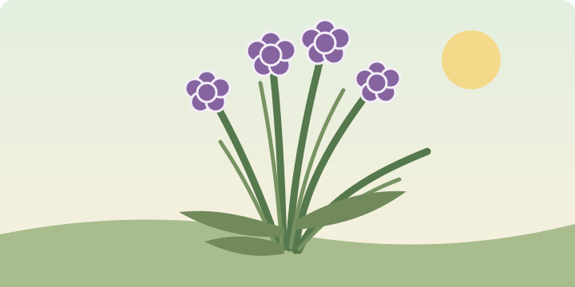

Sun to part shade
Light
The Little Herb Garden

Allium schoenoprasum
A hardy perennial herb with slender, onion-scented leaves and edible purple flowers. Snip fresh leaves into everyday meals, and let a few flowers bloom for pollinators.
Light
Water
Life cycle
Plant chives in a sunny or lightly shaded spot with fertile, well-drained soil. Water during dry spells, especially while plants are getting established.
Trim leaves regularly to encourage fresh growth. Divide crowded clumps every few years, ideally in spring, and remove spent flower heads if you do not want seedlings.
Once a plant is established, snip the leaves close to the base as needed. Take a little from several stems rather than cutting the whole clump at once.
Chives produce rounded clusters of purple flowers in late spring and early summer. The flowers are edible and can be pulled apart to garnish salads.
Leave some blooms on the plant for bees and other pollinators. Regularly removing every flower also prevents seed from forming.
Chives are a flavourful food herb in the allium family, alongside onions and garlic. They can add taste to a meal without needing much salt.
Chives are not a proven treatment for illness and should not replace prescribed medicine or professional care.